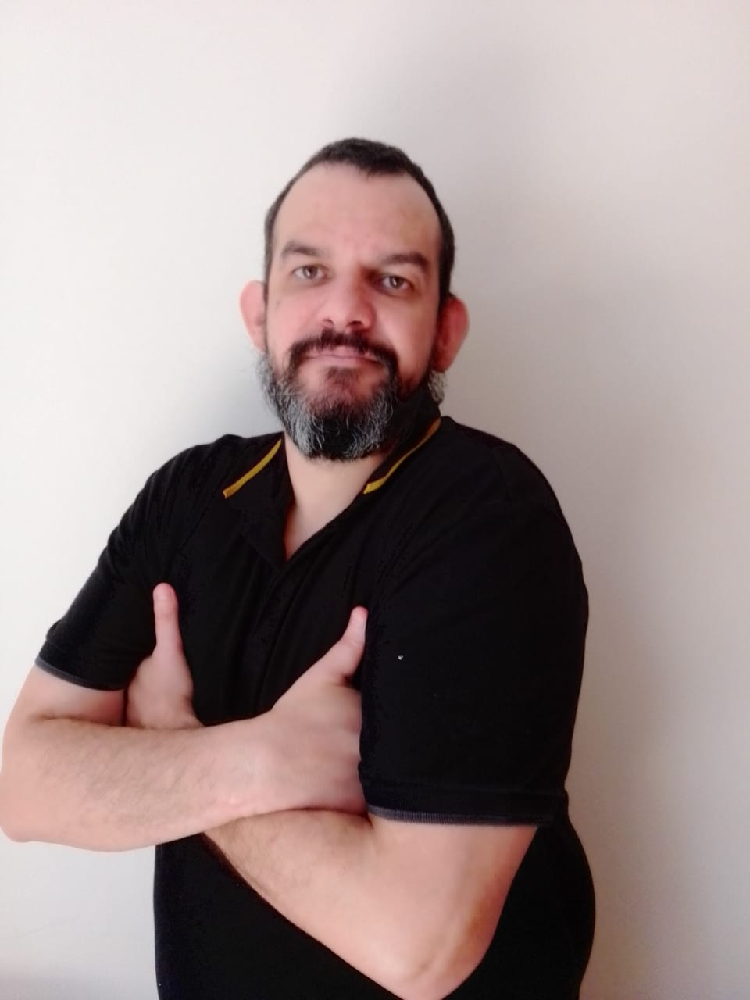
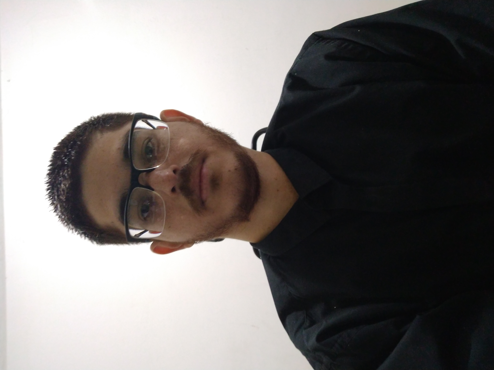
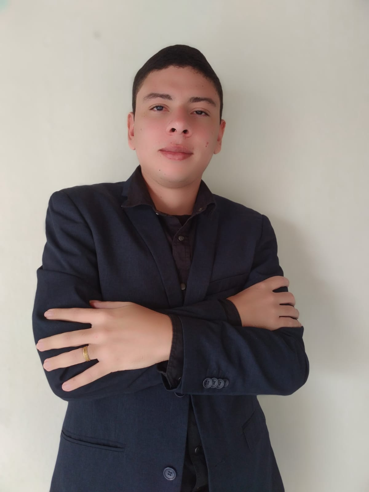
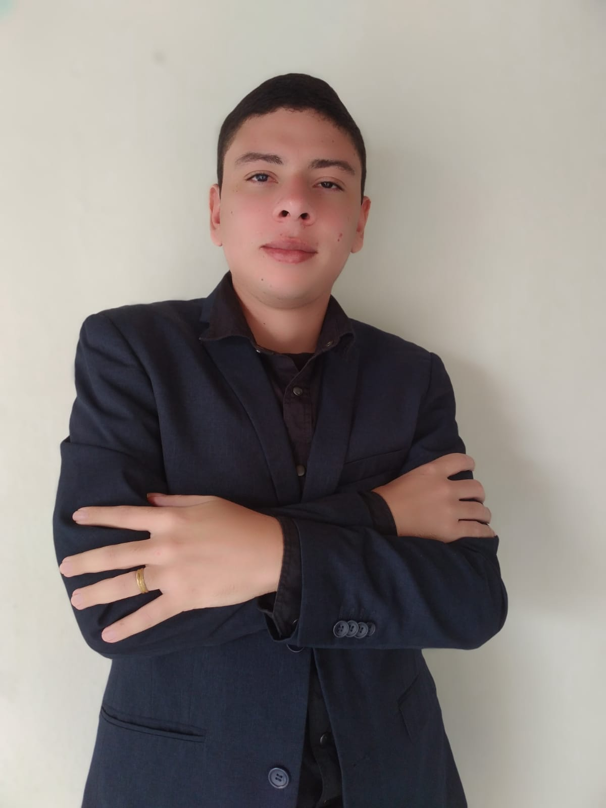
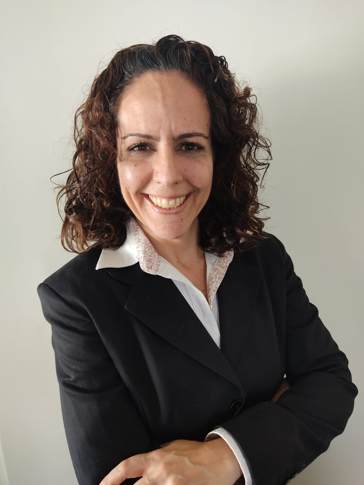
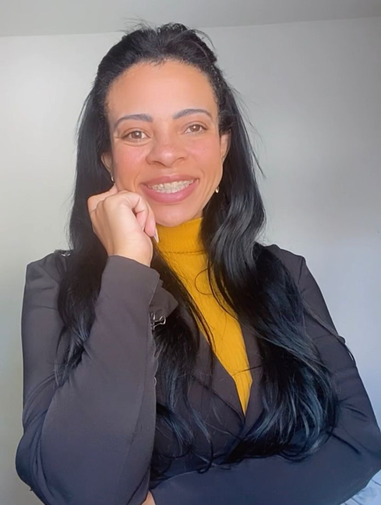

Quem somos
-

Herick Portugal Bomtorin
Deficiente auditivo bilateral profunda desde nascença, formado de tecnólogo em Análise e Desenvolvimento de Sistemas em 2013, último trabalho dele na empresa chamada LINX Sistemas e consultoria atuando como suporte de TEF de conectividade. Interessou de tecnologia quando tinha 15 anos de idade e até hoje obteve vários cursos em especificação de tecnologia em qualquer área.
-
 Bruno da Silva Santos
Deficiente físico (usuário de cadeira de rodas), 29 anos. Estudei por 2 anos contabilidade e me formei em tecnologia em análise e desenvolvimento de sistemas em 2019. Fiz estágio em 2018/2019 na IBM em suporte mainframe e atualmente trabalho na netshoes na área de atendimento via chat/ e-mail. Sempre gostei de tecnologia e quero voltar pra minha área de formação, desenvolver SKILS com treinamento e na prática pra ganhar conhecimento na área e me consolidar como desenvolvedor
-
 
Allan Andrews Nunes de Pontes

Allan Andrews Nunes de Pontes
Tenho 28 anos,sou deficiente visual desde nascença. Durante alguns anos cursei tecnólogo em eletrômecanica e serviços indústrias. Meu último trabalho foi auxiliar em manutenção industrial na empresa Gerdau Aços Longos. Percebi que outras áreas me interessavam mais, e foi aí que conheci a área de tecnologia, onde hoje estou muito encantado e apreendendo muito nesse novo mundo.
-

Daniela Ramalho Cury
Surda bilíngue, ou seja, sinalizadora e oralizada. Minha surdez é congênita por conta da rubéola. Formada em Educação Física, Letras-Libras e Pedagogia, mestra em educação e MBA em Investimento e Private Banking pelo IBMEC XP. Com passagem de um ano de Ciência da Computação. A tecnologia faz parte do meu dia a dia, ou seja, um dos meus hobbies. Hoje, com a nova geração digital e tecnologia que estamos no momento, quero aprender e aprofundar as novas ferramentas, programações e técnicas em geral. Estou em fase de transição da área educacional para a área de finanças e vi uma oportunidade de mesclar com a tecnologia em uma empresa financeira.
-

Thaís Aparecida Chagas da Silva
Perdi a visão do olho direito aos 11 anos durante uma brincadeira de criança, desde então reinventar virou minha palavra de ordem. Sou formada em marketing digital, certificada em marketing de conteúdo, produção de conteúdo para web, revisão de conteúdo para web e inbound marketing pela rock content e certificada em Google Analytics pelo Google. Tecnologia sempre fez parte da minha vida, desde cedo me interessei pelo mundo digital e isso move minha vida. Acredito que a tecnologia nos fornece muitas ferramentas para transformar o mundo em um lugar melhor.